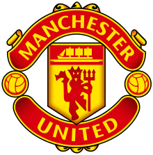

Η Μάντσεστερ Γιουνάιτεντ (αγγλικά: Manchester United) είναι επαγγελματική ποδοσφαιρική ομάδα με έδρα την πόλη του Μάντσεστερ. Αγωνίζεται στην Πρέμιερ Λιγκ της Αγγλίας και είναι ένας από τους πιο επιτυχημένους ποδοσφαιρικούς συλλόγους της χώρας. Ο πιο πετυχημένος στο νησί. Η έδρα της είναι το Ολντ Τράφορντ. Έχει κατακτήσει 20 φορές το αγγλικό πρωτάθλημα ποδοσφαίρου, 12 φορές το Κύπελλο Αγγλίας και 21 φορές το Community Shield, με όλες τις κατακτήσεις να αποτελούν ρεκόρ για το αγγλικό ποδόσφαιρο, ενώ έχει κατακτήσει και 4 Λιγκ Καπ. Σε διεθνές επίπεδο έχει κατακτήσει 3 Τσάμπιονς Λιγκ, 1 Κύπελλο Κυπελλούχων, 1 ΟΥΕΦΑ Γιουρόπα Λιγκ, 1 Σούπερ Καπ, 1 Διηπειρωτικό Κύπελλο και 1 Παγκόσμιο Κύπελλο Συλλόγων. Οι παίκτες της χαρακτηρίζονται και ως Κόκκινοι Διάβολοι. Για περισσότερες πληροφορίες.
Τμήμα Εφαρμοσμένης Πληροφορικής